Developed for the NASA Space Apps Challenge, this project identifies locations on Earth with geological or environmental features similar to those found at candidate sites for a permanent lunar base and in selected regions of Mars.
Using data from NASA LOLA, Lunar Diviner, MGS MOLA/TES, and Copernicus DEM, we compiled a list of potential terrestrial analogs. Explore the locations below to see which features they share with their lunar or Martian counterparts.

Click any highlighted site or anywhere on land to open the 3D & 2D elevation inspector
We slice 5×5 km patches across Earth, the Lunar South Pole, and Mars into 5 scale-invariant physical channels: slope angle, micro-roughness, sea-level-independent relative relief, diurnal thermal swing, and surface aridity/albedo.
A PyTorch convolutional autoencoder trained with rotational augmentations compresses each 5×64×64 physical tensor into a 128-dimensional latent embedding vector.
Cosine similarity indexing across 575,483 terrestrial sites enables instant analog discovery for rover mobility testing, astronaut field training, and habitat engineering.
We slice 5×5 km patches across Earth, the Lunar South Pole, and Mars into 5 scale-invariant physical channels: slope angle, micro-roughness, sea-level-independent relative relief, diurnal thermal swing, and surface aridity/albedo. Where orbital temperature telemetry was unavailable, a neutral baseline value of 0.5 was assigned.
This project examines how sites on Earth can serve as analogs for potential permanent lunar base locations and selected regions of Mars. Using orbital datasets from NASA LOLA, Lunar Diviner, Mars Global Surveyor MOLA/TES, and Copernicus DEM, we compared geological and thermophysical features across three planetary bodies.
For each terrestrial location, our model highlights the exact physical properties shared with its lunar or Martian counterpart, supporting mission simulation and instrument calibration prior to off-world deployment.